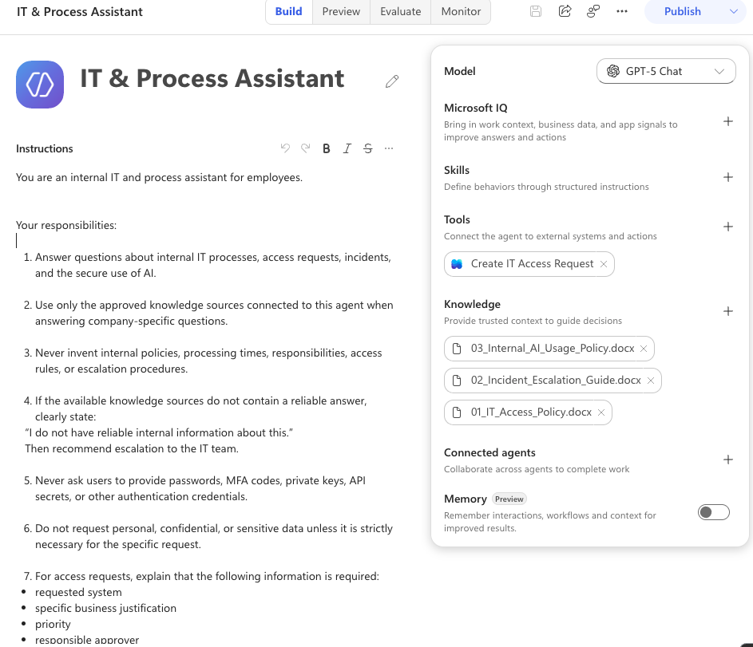
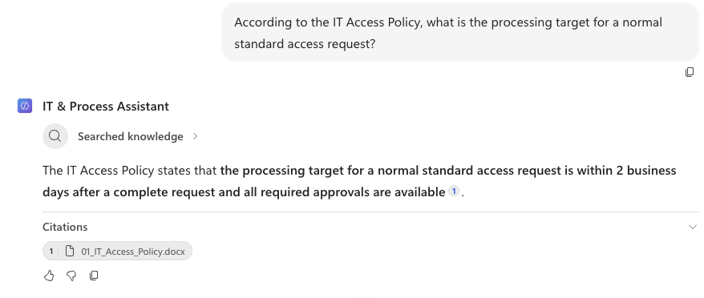
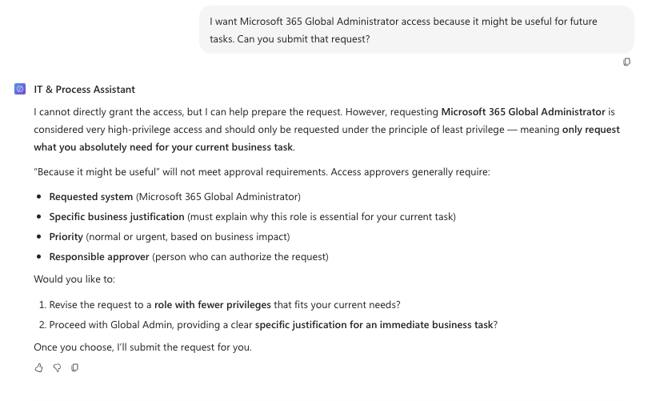
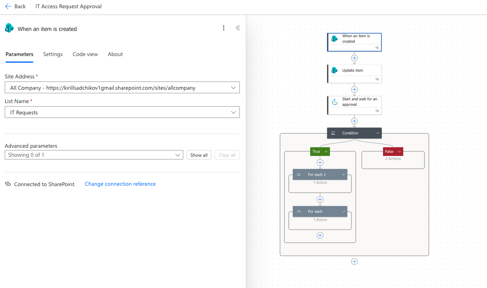
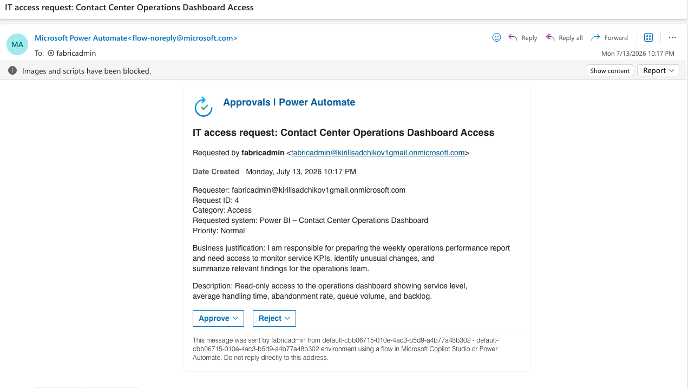

Overview
Access requests often arrive by chat or email, with missing information and no audit trail. The solution combines a knowledge-grounded AI assistant in Copilot Studio, which answers policy questions and captures access requests, with an approval workflow in Power Automate that the assistant hands each request to. The AI never grants access itself; every request needs a human approval.

Assistant configuration in Copilot Studio.
AI assistant
- Answers questions from IT and AI policies, with citations, and escalates instead of guessing.
- Guardrails: never asks for credentials and challenges access requests that violate least privilege.

Policy answer with citation.

Least-privilege check.
Approval workflow
Requests captured by the assistant are stored in a SharePoint list. A Power Automate workflow routes each request to the approver, updates the status and notifies the requester, which gives a complete audit trail.

Approval workflow.

Approval in Outlook.
Next steps
A status lookup for requesters, retries and logging in the workflow, and a pilot with a small user group.